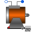
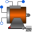

AsynchronousInductionMachinesAsynchronous induction machines |
|
Package Contents
|  |
Asynchronous induction machine with squirrel cage |
|  |
Asynchronous induction machine with slip ring rotor |
Information
This information is part of the Modelica Standard Library maintained by the Modelica Association.
This package provides squirrel cage and slip ring induction machine models.